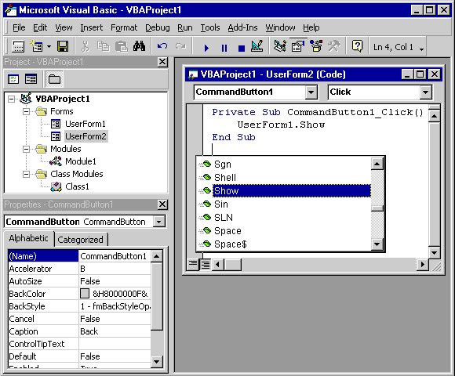
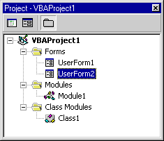
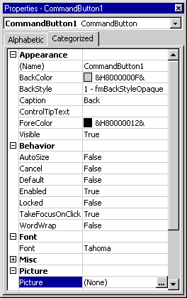
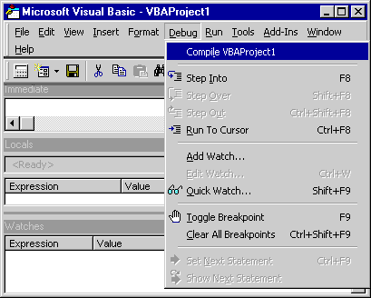
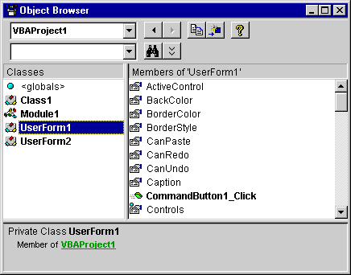
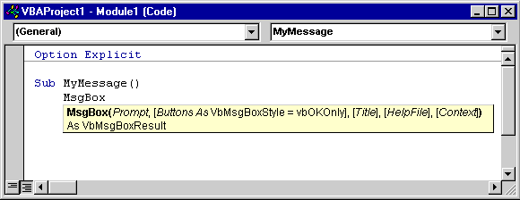
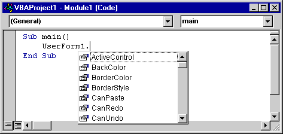
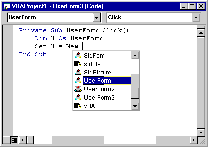
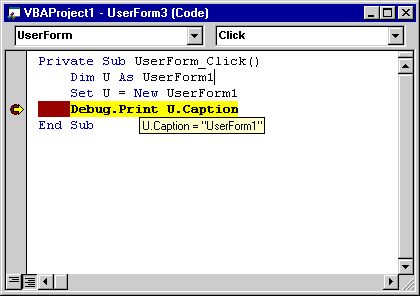
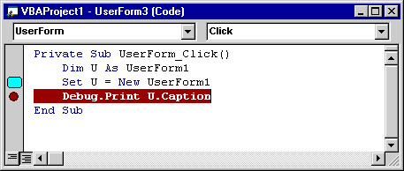

Microsoft Visual Basic for Applications 6.0 Software
Development Kit Version 6.5
Welcome
Guide
Legal Information
Introduction
Benefits of Visual Basic for Applications
Visual Basic for Applications Features
Visual Basic for Applications 6.0
Developer Enhancements
Visual Basic for Applications 6.0
Integration Enhancements
The Visual Basic Editor
Installing the Visual Basic for Applications
SDK
Viewing Online Help
Other Resources for Visual Basic for
Applications
Legal Information
Information in this document, including URL and other Internet web site
references, is subject to change without notice. The example companies,
organizations, products, people and events depicted herein are fictitious. No
association with any real company, organization, product, person or event is
intended or should be inferred. Complying with all applicable copyright laws is
the responsibility of the user. Without limiting the rights under copyright, no
part of this document may be reproduced, stored in or introduced into a
retrieval system, or transmitted in any form or by any means (electronic, mechanical,
photocopying, recording, or otherwise), or for any purpose, without the express
written permission of Microsoft Corporation.
Microsoft may have patents, patent applications, trademarks, copyrights, or
other intellectual property rights covering subject matter in this document.
Except as expressly provided in any written license agreement from Microsoft,
the furnishing of this document does not give you any license to these patents,
trademarks, copyrights, or other intellectual property.
© 2007 Microsoft Corporation. All rights reserved.
Microsoft, MS-DOS, Visual Basic, Windows, Windows NT, Windows XP, Win32,
Win32s, and Visual C++ are either registered trademarks or trademarks of
Microsoft Corporation in the U.S.A.
and/or other countries.
The names of actual companies and products mentioned herein may be the
trademarks of their respective owners.
Introduction
Thank you for evaluating the Microsoft®
Visual Basic® for Applications
6.0 Software Development Kit (SDK) version 6.5. The SDK is Microsoft’s essential
resource for integrating the Visual Basic for Applications (VBA) development
and run-time environment into your application. VBA provides you and your
customers with the world’s premier embedded programming technology for creating
custom solutions using your software.
This guide begins with a description of how you and your organization can
benefit from a decision to license VBA and integrate it into your application
(see Benefits of Visual Basic for Applications).
It also contains a brief overview of VBA 6.0 features (see Visual Basic for Applications Features).
The best way to discover how valuable VBA technology can be is to install
the SDK and evaluate what is required to integrate VBA into your application. Installing the Visual Basic for Applications SDK
contains instructions on installing and beginning to use the SDK.
The following options are available for getting help on the Visual Basic for
Applications 6.0 SDK version 6.5:
Benefits of Visual Basic for Applications
When you host Visual Basic for Applications inside your application, you
provide your customers with the full power of Microsoft Visual Basic. The key
technology that makes individual Windows applications programmable and also
makes it easy for your customers to create integrated solutions is the
Component Object Model (COM) technology known as Automation (formerly called
OLE Automation). Automation allows a developer to use VBA code to create and
control software objects exposed by any application, dynamic-link library
(DLL), or ActiveX® control that
supports the appropriate programmatic interfaces.
Supporting Automation and adding VBA to an application creates software that
is customizable by your customers to meet specific business needs. Customizable
applications that include VBA not only enable developers to build solutions
more quickly, but also help their end users learn with less effort. For your
development team, customization means that you can deliver your product to the
market sooner because you can depend on your reseller channel or end customers
to add the features you did not include in your application. For MIS and
business managers, customization means that solutions can be developed quickly,
and deployed easily, with minimal maintenance. In the context of two-year
backlogs for new applications and high end-user training costs, these solutions
provide a tremendous business benefit in terms of timeliness and return on
investment.
- Faster development cycles
through component reuse. Because customizable applications
expose their functionality as reusable components, developers can utilize
existing functionality rather than create it from scratch. By reusing
objects from customizable applications, developers can build more powerful
solutions and write less code. Less code means more productive developers
and faster development cycles. In an environment of rapidly changing
business requirements, faster development cycles and increased developer
productivity can create significant competitive advantages.
- Integration with corporate data
and systems.
Customizable applications are also applications that can share data with
other enterprise systems. Whether data exists in a structured database, an
enterprise resource planning (ERP) system, or a spreadsheet, applications
need to be able to tap into existing information. This leads to tighter
integration between systems, quicker response time, and more accurate
results by eliminating re-keying of data.
- Lower training costs and
greater productivity for end users. The benefits of customizable
applications also enrich the organization through greater end-user
productivity. Application customization enables custom solutions to employ
functionality with which users are already comfortable and productive.
Consequently, end users can leverage their training with the customizable
applications to learn more quickly. In a sense, custom solutions built
with customizable applications inherit end user skills.
- Greater value from application
investment.
Customizable applications mean developers can tailor off-the-shelf
productivity applications to meet specific business needs. By automating
processes, extending the application's existing functionality, or
tailoring the application interface to a set of users’ specific needs,
developers can create customized versions of programmable applications
that are far more valuable than the original product.
Visual Basic for Applications Features
When you host Visual Basic for Applications inside your application, you
enable users to customize your software to meet their specific needs.
Furthermore, customers can integrate your VBA-enabled software with other
applications and data using widely accepted technologies like COM and OLE DB.
Furthermore, you provide your customers with the full power of Microsoft Visual
Basic inside your application, including features like the following:
- VBA technology. This is the
same version of VBA found throughout the Microsoft® Office family
and hundreds of third-party products. This consistency makes it much
easier for developers to leverage their training to create custom
solutions and reuse code across applications.
- Integrated development
environment (IDE). VBA offers a completely standardized integrated
development environment, including the Visual Basic editor, which is
immediately familiar to more than 3.2 million developers around the world.
The Visual Basic editor provides powerful tools for tracking projects,
debugging, setting properties, and protecting project code.
- Localized IDE and online help. For companies
that produce software for international markets, the VBA IDE and help
files have been localized into 11 languages in addition to English:
French, Italian, German, Japanese, Swedish, Spanish, Korean, Brazilian,
Dutch, Traditional Chinese, and Simplified Chinese.
- Developer IntelliSense. IntelliSense® technology
features in VBA provide developers with instant syntax reference and
object model assistance to reduce development time. VBA also has an Object
Browser for working with application object models.
- Microsoft Forms. The Microsoft
Forms Designer enables developers to create rich forms and custom dialog
boxes in any application that supports VBA.
- Support for ActiveX® Controls. Developers
can embed ActiveX controls directly into Microsoft Forms. ActiveX controls
are reusable software components that allow developers to easily add rich
interactive capabilities to their VBA solutions.
VBA 6.0 represents a major new release in terms of developer functionality
and ease of integration. Microsoft listened closely to feedback from more than
100 third-party software vendors while designing this version. The list of
developer enhancements includes the following:
- Full core language parity with
Microsoft Visual Basic 6.0
- Digital signing of VBA projects
- Developer Add-ins in the Visual Basic
Editor
- ActiveX Designer support for host
projects
- Modeless forms
- Multithreaded VBA projects
- Multi-instancing of host project items
- Stronger encryption of VBA project
passwords
- Support for HTML Help
- Microsoft Windows Installer-based
installation
In addition to enhanced VBA developer features, it is now easier to host VBA
in your application. The most significant advancement is the new Application
Programmability Component (APC). APC is a COM-based component that exposes a
simple set of integration interfaces. By calling a few of these interfaces, you
can host VBA in your software quickly and easily.
The SDK CD-ROM contains software and documentation necessary to host VBA in
your application. This includes the following:
- Technical Overview
- VBA setup and deployment documentation
- Merge Modules for Microsoft® Windows® Installer
- Application Programmability Component
(APC)
- APC API reference
- MFC and C++ helper classes and header
files for APC
- Active Template Library (ATL) sample
application and sample documentation
- Microsoft Foundation Class (MFC)
sample applications and sample documentation
- Multithreading sample and
documentation
- VBA 6.0 binaries (both debug and
release versions)
- Visual Basic integration wizard and
sample
The best way to discover the value of VBA technology is to install the SDK
and integrate VBA into your application. Installing
the Visual Basic for Applications SDK, later in this document, provides
instructions for doing this.
Visual Basic for Applications 6.0
Developer Enhancements
Visual Basic for Applications 5.0, included in Microsoft Office 97,
represented the first widely available programming technology shared by
multiple Office applications (Access, Excel, PowerPoint, and Word). Since Microsoft
began the VBA licensing program in 1996, more than 3.2 million professional
developers worldwide have adopted the Visual Basic language as their primary
development tool. Enhancements in VBA 6.0, released as part of Microsoft Office
2000 (and now included in Outlook 2000 and FrontPage 2000), are geared toward
making those millions of developers even more productive.
- Full core language parity with
Microsoft Visual Basic 6.0. VBA 6.0 shares the same core language
enhancements with Microsoft’s premier rapid application development tool,
Visual Basic 6.0. Enhancements in Visual Basic 6.0 include new string
manipulation functions and object-oriented language constructs. Developers
who use Visual Basic can more easily leverage their skills and source code
with applications enabled for VBA.
- Digital signing of VBA
projects.
To combat the threat of so-called "macro viruses," developers
can now digitally sign their VBA projects using the same authentication
technology used by Microsoft Internet Explorer. Users of custom solutions
built with your application can reliably determine the source of VBA code
and choose whether to trust the source using the same options available in
Microsoft Internet Explorer.
- Developer add-ins in the Visual
Basic editor.
The VBA integrated development environment (IDE) now supports an add-in
model so developers can make use of productivity tools to help them design
solutions. These tools, available to developers in all VBA 6.0 host
applications, can modify source code, create user interfaces, and
manipulate project information. Additionally, Microsoft Office XP
Developer includes a number of add-ins and wizards that work both in
Office 2000, Office XP and in third-party applications that host VBA 6.0.
- ActiveX Designer support. ActiveX Designers
are graphical tools that developers can use to help build solutions
quickly. They are compatible with both Visual Basic 6.0 and VBA 6.0.
Developers can use designers provided by Microsoft in both Visual Studio
6.0 and Office XP Developer to assist with data access and reporting.
Third parties also can create custom Designers to assist in specific
programming tasks.
- Modeless forms. The Microsoft
Forms component that ships with VBA now supports modeless forms.
Developers use Microsoft Forms to create custom dialog boxes for user
input and feedback.
- Multithreaded VBA projects. Applications
that embed VBA 6.0 can now enable multithreaded VBA projects that run on
individual application threads, thus increasing performance and
responsiveness. This enhancement was the direct result of feedback from
third-party software vendors that require near real-time responsiveness in
their applications.
- Multi-instancing of host
project items.
Application developers now have the option of exposing program objects
that are dynamically instanced by VBA developers. This lets developers
focus on creating useful object classes that are instantiated at run time
by VBA developers.
- Stronger encryption for VBA
project passwords. To better protect a developer’s intellectual
property, VBA now supports strengthened encryption for VBA project
passwords.
- Support for HTML-based Help. VBA 6.0
supports Microsoft’s new HTML Help format for both VBA core functions and
application-specific information.
- Microsoft Windows Installer. VBA 6.0 core
files are distributed using Microsoft Windows Installer technology,
enabling features such as intelligent install and uninstall, and
self-repairing capabilities.
For information on features that help you integrate and evaluate VBA, see Visual Basic for Applications 6.0
Integration Enhancements.
Visual Basic for Applications 6.0
Integration Enhancements
This version of the Visual Basic for Applications SDK includes the following
enhancements, designed to make it easier for you to evaluate and integrate VBA
into your software:
- Application Programmability
Component.
VBA consists of a large number of COM-based interfaces that provide a
variety of services to Windows-based applications that host VBA. To
simplify the task of integrating VBA into your application, a single COM
component called Application Programmability Component (APC) is included
in the SDK. APC consists of objects with properties, methods, and events
for instantiating VBA, managing project items, storing VBA projects,
recording macros, and enabling advanced features such as multithreading
and digital signing. You can access APC functionality directly from C++
(using the MFC or ATL wrappers is the recommended way to do this) or Visual
Basic.
- MFC-based sample application. The SDK
includes a sample calculator application (Vbacalc.exe) that demonstrates a
phased integration approach. The VBACalc samples take you step by step
from ground zero (no VBA implementation), to simple VBA projects, to
advanced integration with macro recording and more.
- MFC and C++ helper
classes and header files for APC. For MFC or C++ developers, helper
classes that encapsulate APC functionality and are optimized for the most
common integration scenarios are provided.
- APC Application Programming
Interface (API) Reference. The API reference documents each APC
interface and provides a guide for integration. Documentation is provided
for both C++ and Visual Basic developers.
- VBA 6.0 binaries. When you’re
ready to distribute your application, the SDK includes the same VBA 6.0
binaries that ship with Microsoft Office 2003. Both debug and release
versions are included to aid integration troubleshooting.
- HTML Help authoring tools. If you plan
on integrating custom user assistance topics with the HTML Help system,
the SDK provides all the tools and documentation you need.
This version of the Visual Basic for Applications SDK includes the following
features.
- Technical Overview. If you want to
know what strategies will help you create a successful VBA integration,
the Technical Overview explores the issues and components associated with
VBA integration from a higher level, that is, from a design issue point of
view.
- Windows Installer Modules
(msi/msm).
These contain individual packages of components and data that, with the
assistance of Windows Installer technology, merge the host application
setup with VBA to allow installing both simultaneously.
- MFC Sample Getting Started
Guide. This
guide shows you the steps required to integrate VBA into an MFC-based host
using APC. Both single document interface (SDI) and multiple document
interface (MDI) applications are covered.
- MFC MDI Sample. This is a
MultiPad application, which is an enhancement of Notepad, which
demonstrates the methods required to integrate VBA with an MDI
application.
- ATL Sample Getting Started
Guide. This
getting starting guide uses a simple video game to show you how to
integrate VBA using ATL Template classes.
- Visual Basic Integration Wizard
and Sample. If
you have an existing Visual Basic application that you want to integrate
with VBA, this wizard will perform the integration. It helps you select
the proper options and add the code to create a basic VBA integration. The
sample is similar to Notepad. The wizard was run on the sample, and then
additional code was added to implement persistence of the document and the
VBA project.
- MultiThread Sample and Getting
Started Guide. One
of the most requested features is the MultiThreaded VBA. This sample and
getting started guide show you how the code and technology accomplish
this.
For information about features geared toward making VBA developers more
productive, see Visual Basic for
Applications 6.0 Developer Enhancements.
The Visual Basic Editor
The Visual Basic editor provides you with the ability to create, modify, and
debug code behind the application document. This integrated development
environment exists outside the host application window, enabling developers to
write code in VBA and simultaneously view the results of their programming in
the host application. Although the Visual Basic editor exists outside the
application window, it runs in the same memory space as its host, thereby
benefiting from tight integration for event handling as well as enhanced
performance.
The Visual Basic editor also provides the following:
- Enhanced editor with syntax
checking, color-coded syntax, and support for drag-and-drop editing.
- Project Explorer for navigating
the project components.
- Enhanced properties window for setting
and viewing object properties.
- Debugging tools to help track
program execution and find bugs.
- Enhanced object browser for browsing
and searching for properties and methods across object model libraries.
- IntelliSense features for instant
syntax reference and object model assistance to reduce programming time.
- Improved code security with enhanced
password protection to lock both documents and projects. Developers need
the ability to distribute their solutions in a secure and protected form
to prevent modification to their code base. Projects associated with a
document can be protected without restricting access to the rest of the
document.
- Project import and export to enable
project components (forms and class modules) to be exported and imported
for code storage and sharing. Exported project components are stored as
standard text.
- Block Comment and Uncomment. An Edit
toolbar provides quick access to the Block Comment and Uncomment feature,
which enables developers to select blocks of code and comment out the
entire selection with the click of a button.
- Conditional compilation for
incorporating debugging code that will not execute in the final version of
the application. Developers can set compilation flags within their code to
control the resulting behavior of the application. For example, developers
may wish to include debugging code or custom messages during the
development phase that they would not want end users to see. Conditional compilation
enables developers to easily create multiple compilations of their
application by setting flags in their code.
- Support for class modules. Within a
class module, developers can add public procedures that define custom
methods and properties for the object. When an instance of the class is
created, developers can apply these custom methods and properties as they
would for any object. Modules can be shared across projects through
drag-and-drop export and import functionality, or from within an Automation
server based on Visual Basic.
Code
Window

The Visual Basic editor includes a Code window for the document, for
any document sections that support code behind them, and for each code and
class module and form in the project.
Drag-and-drop functionality is implemented throughout the Visual Basic
editor. Developers can drag and drop code and variables between Code
windows, into the Watches window, into the Locals window, and
across projects.
Project
Explorer

The Project Explorer displays the forms, modules, and references associated
with each open project in an outline view. Each project appears as a new root
in the outline, enabling easy switching among different documents' projects for
developers working on multiple projects simultaneously. A project exists for
each open document and template.
The following project components are shown in the outline:
- The document that owns the project.
- Internal document sections that
support code behind them.
- Forms belonging to the project.
- Code and class modules belonging to
the project.
- References to other VBA projects
(references are permitted to projects within the same application only).
Properties
Window

The Properties window displays the properties of host items, forms,
and controls. It also can be shown in the host application's window.
The Properties window has two tabs: Alphabetic and Categorized.
The Alphabetic tab provides an alphabetical list of properties. The Categorized
tab shows properties grouped by category, for example all properties related to
color, font, or position. These categories can be expanded or collapsed in the Properties
window.
Debugging
Tools

VBA 6.0 includes debugging tools to help developers identify compile errors,
program logic errors, and run-time errors. These tools include a Locals
window, a Watches window, and an Immediate window. The Locals
window also includes a dialog box that shows the current variable and enables
the developer to jump to procedure definitions and references.
These tools provide the following functionality:
- The Locals window
automatically displays all of the current procedure's variables and their
values.
- The Watches window
enables monitoring of the value of a particular variable or expression.
Code execution may be interrupted when a watch expression's value changes
or equals a specified value.
- The Immediate window instantly
evaluates any expression or statement in Visual Basic, such as a call to a
Sub or Function.
- The debugger provides a list of
active procedure calls during break mode.
- Code can be dragged and dropped
from the editor into the Immediate and Locals windows to
speed the debugging process.
Object
Browser

The Visual Basic editor's object browser differentiates between built-in
properties, custom properties, methods, event handlers, and user-defined
procedures. It indicates globally accessible members. It shows function return
types, parameter names and types, and user-defined types and constants.
Hyperlink jumps to reference objects enable easy navigation of the object
hierarchy. The object browser can search for objects and members across type
libraries.
IntelliSense
Features
Visual Basic 6.0 brings IntelliSense technology to the developer, providing
on-the-fly syntax and programming assistance and reference. The developer can
choose to turn these automated features off and access them on demand through
the Edit menu in the Visual Basic editor or with keystroke combinations.
The following features are available in the Code window or the Immediate
window:
- Complete Word. Completes the
word that is being typed, once enough letters are entered to make it
unique. (Keystroke equivalent: CTRL+SPACE.)
- Quick Info. When a
procedure or method name is entered followed by a space or an opening
parenthesis, a tip automatically appears under the line of code writing.
The tip gives syntax information about the procedure. (Keystroke
equivalent: CTRL+I.)

- List Properties/Methods. Displays a
pop-up menu listing the properties and methods available for the object
that precedes the period. (Keystroke equivalent: CTRL+J.)

- List Constants. Displays a
pop-up menu listing the constants that are valid choices for the property
or method typed and that precede the equal sign (=). (Keystroke
equivalent: CTRL+SHIFT+J.)

- DataTips™ pop-up information. When VBA 6.0
is in break mode and the cursor is placed over a variable, the variable's
value is displayed in a window similar to a ToolTip.

- Margin Indicators. Developers
can set a breakpoint, the next statement, or a bookmark by clicking in the
margin of the code editor.

Installing the Visual Basic for Applications SDK
The CD that accompanies this guide contains the complete Visual Basic for Applications
6.0 SDK version 6.5, including interfaces for integrating VBA, VBA binaries for
distribution, and integration documentation. The SDK End User License Agreement
grants you a license to install the SDK for integration evaluation purposes. If
you wish to distribute an application enabled for VBA to your customers, you
must sign a license agreement with Microsoft.
You must take the following steps to install the SDK:
- Back up all important data
files on your computer.
- Review the SDK release notes.
- Ensure that system requirements
are met.
- Uninstall any previous versions
of the VBA SDK.
- Run Setup.exe from the CD to
copy SDK files to your machine and install VBA 6.0.
Once you have installed the SDK, you can switch between debug and release
versions of VBA 6.0 by using the Add or
Remove Programs Control Panel for
Microsoft Visual Basic for Applications SDK Version 6.5.
Backing
Up Your Files
As with any new software, you should make backup copies of your important
data files before installing the VBA 6.0 SDK.
Reviewing
the SDK Release Notes
The SDK includes release notes in an HTML document located in the root
directory of the VBA 6.0 SDK CD. This document, relnotes.htm, includes
installation instructions and late-breaking information. You should read the
entire document before installing the SDK.
System
Requirements
The VBA 6.0 SDK contains information and components for integrating VBA with
host applications that operate on Intel-based platforms running Windows® Server 2003, Windows® XP, Windows® 2000 Professional, or Windows NT® Workstation version 4 with Service Pack
6 or later. Version 6.5 of the VBA SDK does not run on Windows NT Workstation
version 3.51 or earlier.
Note For the best performance, install
the VBA 6.0 SDK on released operating systems only.
To view SDK documentation, which uses HTML Help format, you will need
Microsoft Internet Explorer version 3.02 or later.
You will need approximately 110 MB of hard disk space to install a full
"English Only" version or 270 MB to install the full all-languages
VBA 6.0 SDK version 6.5.
Uninstalling
Previous Versions
If you installed a previous release of the VBA 6.0 SDK, you must uninstall
it before installing the release software. Microsoft does not support upgrading
over previous releases of the SDK.
To uninstall a previous version of the VBA 6.0 SDK
- Use Add/Remove Programs in
Control Panel to uninstall the VBA SDK.
Installing
the Visual Basic for Applications 6.0 SDK Version 6.5
Once you have prepared your computer, you are ready to install the SDK.
To install the VBA 6.0 SDK 6.5 using Setup.exe
- Quit all programs.
- Run Setup.exe from the root directory
of the VBA SDK CD.
- Follow the instructions on the screen.
Switching
Between Debug and Release Visual Basic for Applications Components
During integration, you may wish to switch between the debug and release
versions of VBA 6.0 components. You can make the switch by using the Add or Remove Programs Control Panel.
To switch between debug and release version of VBA components
- Quit all programs.
- Open the Add or Remove Programs
Control Panel and select
Microsoft Visual Basic for Applications SDK Version 6.5.
- Click Change/Remove.
- Follow the instructions on the screen.
Note The debug
version of VBA components does not coexist with versions of Microsoft Office.
You must install release VBA components to run Microsoft Office or install the
VBA SDK on a different machine.
Viewing Online Help
Help topics for the Visual Basic for Applications 6.0 SDK are in HTML Help
format, and are contained in a file called vba6sdk.chm, located in the root
directory of the VBA 6.0 SDK CD.
HTML Help will work with Internet Explorer version 3.02 or later, although
version 4.01 is recommended for optimal performance.
After installing HTML Help, double-click vba6sdk.chm to open it. To navigate
through the Help file, use the Contents tab, Index tab, or Search
tab.
Note You can create your own Help files
that integrate with VBA Help.
For information specific to VBA, see Other
Resources for Visual Basic for Applications.
Other Resources for Visual Basic for Applications
Following are descriptions of the various resources you can use to get additional
information about Visual Basic for Applications. For information on online
help, see Viewing Online Help.
Microsoft
Visual Basic for Applications Web Site
You can get the latest information about VBA on the Microsoft Visual Basic
for Applications Web site at http://msdn.microsoft.com/vba/.
Microsoft
Developer Network (MSDN) Online Web Site
You can get useful and comprehensive information about developing Windows-based
applications with Microsoft tools and technologies on the MSDN Online Web site
at http://msdn.microsoft.com/developer/default.htm.
Microsoft
Office Developer Forum Web Site
The latest information focused on developing custom applications for
Microsoft Office is available on the Microsoft Office Developer Forum Web site
at http://msdn.microsoft.com/officedev/.
Microsoft
Press
Microsoft Press offers a number of books to help you understand VBA
programming, including the Microsoft Office 2000 Visual Basic Programmer’s
Guide. For a listing of current titles available from Microsoft Press,
visit the Microsoft Press Online Web site at http://mspress.microsoft.com/.
In addition to books, Microsoft Press offers training and learning resources
to help developers get the most out of Microsoft technology. The Microsoft
Press Online Web site offers instant access to all Microsoft Press tools as
well as news, chats with technical experts, and other information to help you
become more productive quickly.
For information on online help, see Viewing
Online Help.